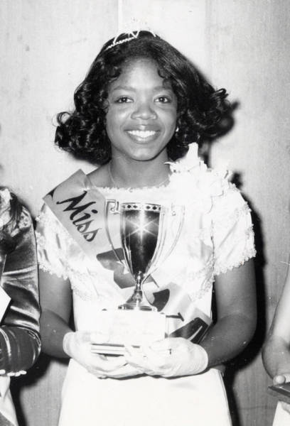

Infância
Oprah Winfrey nasceu numa família batista. Seus pais eram um casal de
adolescentes separados. O pai de Oprah estava nas Forças Armadas quando ela nasceu. Com uma
gravidez inesperada, houve
muitas brigas entre o casal: O pai de Oprah não queria ter filho naquele momento e nem tinha um
namoro fixo com a mãe dela. Depois do nascimento, seu pai a registrou, apesar de não morar junto
com a filha, raras vezes a visitava. A mãe de Oprah, já sozinha desde a gravidez, viajou para o
norte dos EUA para trabalhar quando a menina completou poucos meses de vida, e assim Oprah
passou os seis primeiros anos de vida longe da mãe, morando com a avó materna, Hattie Gail Mae.
O pai raramente ia visitá-la, pois estava morando
longe da cidade. A mãe lhe telefonava às vezes. A avó de Oprah ensinou-a a ler antes de ter
cinco anos, e levava-a para a igreja, onde recebeu a alcunha "A Pregadora", pela habilidade de
recitar versos da Bíblia. Quando Oprah era ainda criança, a avó batia-lhe muito se não soubesse
cantar e recitar corretamente os versos bíblicos ou quando comportava-se mal de qualquer
maneira.

Com seis anos, a mãe de Oprah voltou para buscá-la. Ela se mudou para um bairro humilde, na
cidade de Milwaukee, com a mãe, que foi menos rigorosa para Oprah do que a avó
tinha sido, em grande parte devido ao longo horário de trabalho, onde Oprah ficava o dia inteiro
só em casa. Sua mãe a sustentava sozinha, já que seu pai lhe dava uma pensão muito pequena.
Em 1963, aos nove anos de idade, Oprah passou a ser molestada por seu tio e seus primos
adolescentes, que foram morar com ela e sua mãe. Eles batiam na
menina, além de a estuprarem com frequência. Um grande trauma para Oprah que, ameaçada, nada
podia relatar a mãe
Juventude
Apesar da vida difícil, Oprah sempre se dedicou aos estudos, querendo mudar de vida. Cansada de
sofrer abusos desde criança, Oprah terminou o ensino fundamental e fugiu de casa.
Ao sair de casa, pôde contar com a ajuda de sua melhor amiga, que havia conhecido na escola,
indo morar na casa dela. Quando fez catorze anos, já há seis meses morando com a amiga, conheceu
seu
primeiro namorado, um rapaz de dezoito anos, por quem se apaixonou perdidamente. Após três meses
de namoro, Oprah descobriu-se grávida. O namorado não aceitou a gestação, e
após agredi-la e tentar obrigá-la a abortar, a abandonou grávida, o que gerou uma profunda
depressão na jovem.
Aos sete meses de gestação entrou em trabalho de parto, e sofrendo muito, deu à luz de parto
normal a um menino. Porém, o menino teve complicações por
ser prematuro, e devido a má formação do pulmão, desenvolveu uma insuficiência respiratória,
falecendo poucas horas após o nascimento.
Após tudo isso, a mãe a consolou, e Oprah decidiu mudar de estado, e saiu de Milwaukee, em
Wisconsin, para morar com o pai em Nashville, no Tennessee. Oprah voltou a estudar, para
terminar o ensino médio, e
se tornou cada vez mais dedicada e popular.
Após terminar o colégio, Oprah foi aprovada em um concurso de locução, que lhe garantiu uma bolsa
de estudos na Universidade do Tennessee, uma universidade historicamente negra, onde estudou
Comunicação Televisiva. Ela também atraiu o interesse da rádio local, WVOL, que a contratou para
transmitir as notícias de plantão. Oprah trabalhou nessa rádio nos seus dois primeiros anos na
faculdade.
A escolha de Oprah pela mídia não surpreendeu sua família, em especial sua avó, que dizia que
ela tinha o dom de falar em público. Oprah posteriormente reconheceu a influência da sua avó,
dizendo que ela sempre a incentivou a falar em público "deu-me uma imagem positiva de mim
mesma". Já trabalhando na mídia local, Oprah era a mais jovem e a única negra a ocupar o cargo
de âncora
de um jornal da cidade de Nashville.

Fama e Sucesso
Com o passar dos anos, Oprah foi se destacando cada vez mais, fazendo parte de seletas listas
como a de mulheres mais influentes do mundo e bilionárias (única negra entre as 25 primeiras) -
(...Saiba mais aqui)